TOP 8 BEST RESTAURANTS IN IGALO - HERCEG NOVI
Herceg Novi is a beautiful seaside town in the Bay of Kotor. Herceg Novi has some of the best beaches in Montenegro, but it does not disappoint when it comes to food. Whether it is a traditional Montenegrin menu, fresh seafood or a taste of the East, you will find everything in Herceg Novi. Here are the 8 best places to eat in Igalo and Herceg Novi.
1HOLIDAY LOUNGE BAR
Newly built restaurant with the most beautiful view of Herceg Novi and the Bay of Kotor. All visitors to this restaurant are delighted by the view that this restaurant offers with wonderful food. Absolutely beautiful restaurant built right into the rock of the old mine. The night lighting is breathtaking, and the view of Herceg Novi is equally stunning.
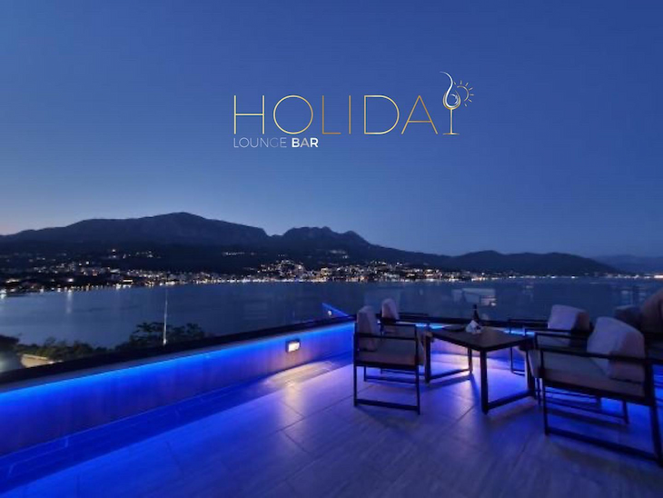
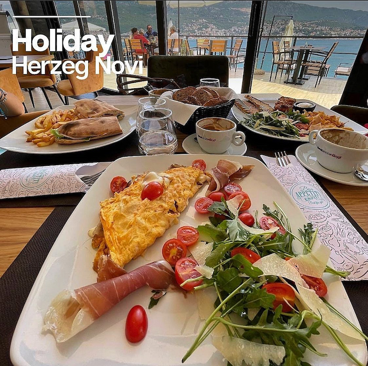
In addition to the stairs leading to this restaurant, this facility provides an elevator of parking to the restaurant with an open view from the elevator to the sea, which is an experience in itself. Guest parking is provided in front of the building. This object is best presented in pictures.
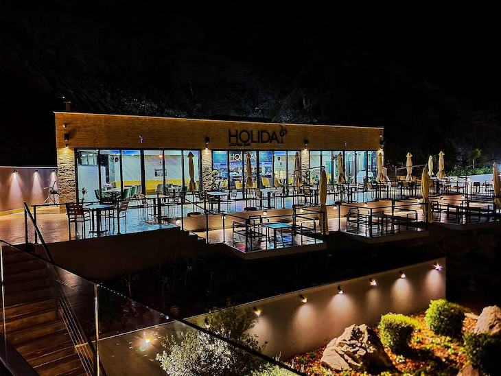
2RIBARSKO SELO
The cleanest sea, home-made, organically grown food, the choice of relaxation or active vacation, sunsets that are not forgotten.
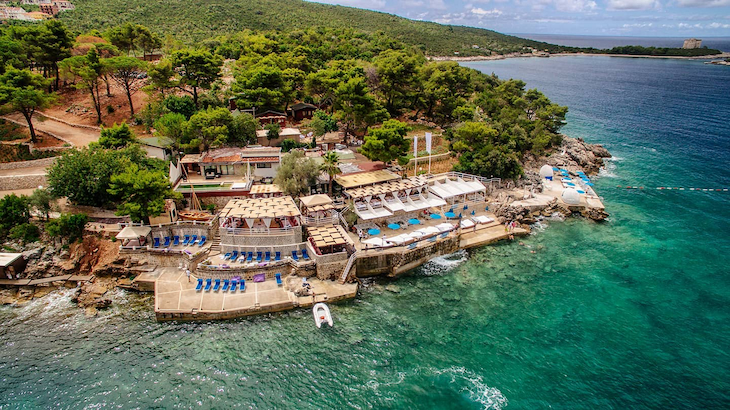
A restaurant that has everything: amazing views, lots of space to relax and one of the most beautiful beaches on the island. The food is extremely fresh and delicious. You can choose your seafood directly from the tray with fresh fish on ice in the restaurant. Ribarsko selo provides its visitors with a unique local experience.
Every day between 11 and 12 o'clock the village is visited by fishermen who bring the fish and seafood they caught that morning. All culinary specialties prepared in the village are from the freshest, organically grown ingredients and part of the vegetables served are grown in the village itself. A special specialty is homemade ice tea, which is the perfect refreshment while relaxing on the beach.
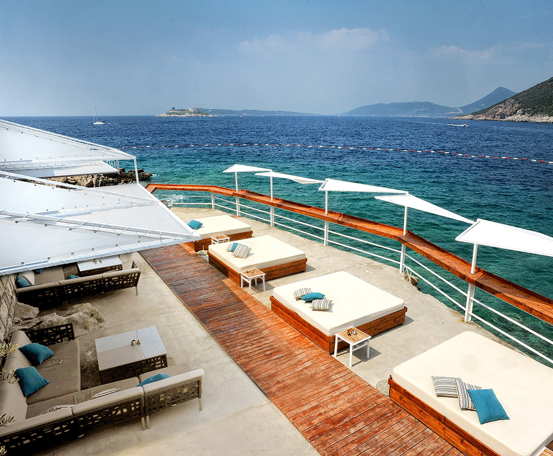
Ribarsko Selo is located on the Luštica peninsula between the beaches of MIrište and Žanjice. It is possible to approach the Ribarsko selo with your own boat because there is a nicely arranged pontoon with berths.
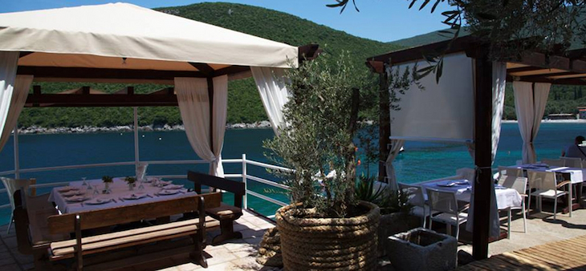
The restaurant within the Ribarsko selo is open every day from 09:00 to 01:00.
3VERIGE 65
This elegantly designed restaurant represents the simplicity of modern architecture with a deep respect for the nature around it. Made of glass, the interior creates a feeling of silence and deep connection with the natural environment of Boka Boka. Our restaurant is perfectly located with a beautiful view of the Bay of Kotor.
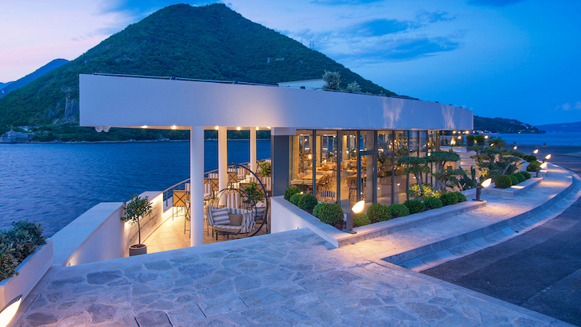
Restaurant Verige65 is located in the narrowest part of the Bay of Boka, an ideal place to observe and admire the beauty of cruisers and yachts in transit. The view from the terrace of this restaurant is perhaps the most beautiful postcard you will take with you. You will remember the town of Perast, the island of Sv. George and Our Lady of Šrpjela. You will have an additional atmosphere if, during your stay, you come across cruise ships, yachts and catamarans that pass by you at only ten meters.
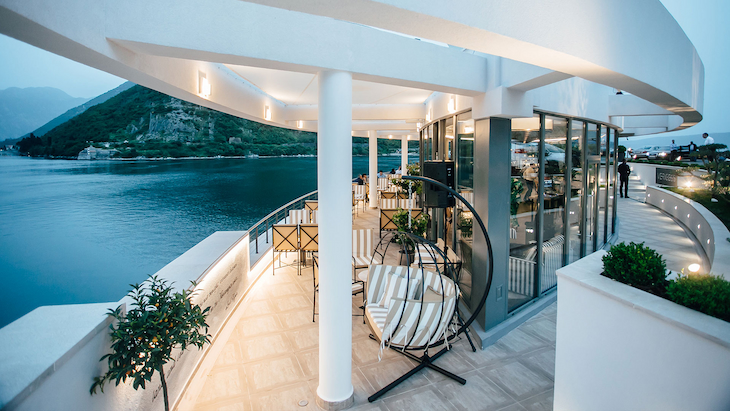
The carefully decorated interior exudes airiness, not hiding the beauty of the environment in which it is located. Every detail is chosen with care that you can’t help but notice. Real hedonists will be won over by top service, an unusual menu and an excellent selection of wines. The menu of Verige65 combines elements of different culinary traditions that this place likes to call a fusion of world cuisines. Inspired primarily by the Mediterranean, then Asia and the Middle East, Verige65 offers a diverse range of world cuisine prepared according to the chef's recipe.
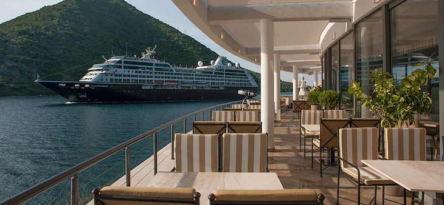
Things you don’t have to worry about when you decide to visit Verige65 are the places where you will park your vehicle and moor your boat. The spacious parking lot contains more than 50 spaces. If you are coming from the sea, you can moor your boat at the pier in front of the restaurant. The port is suitable for boats up to 15 meters.
4KONOBA KRUSO
Enjoy the beautiful ambience of the tavern KRUŠO on the shores of the Herceg Novi Riviera. Excellent chefs and friendly staff will do their best to make your stay complete. In the winter we organize live music on weekends, while in the summer it is Evergreen every night.
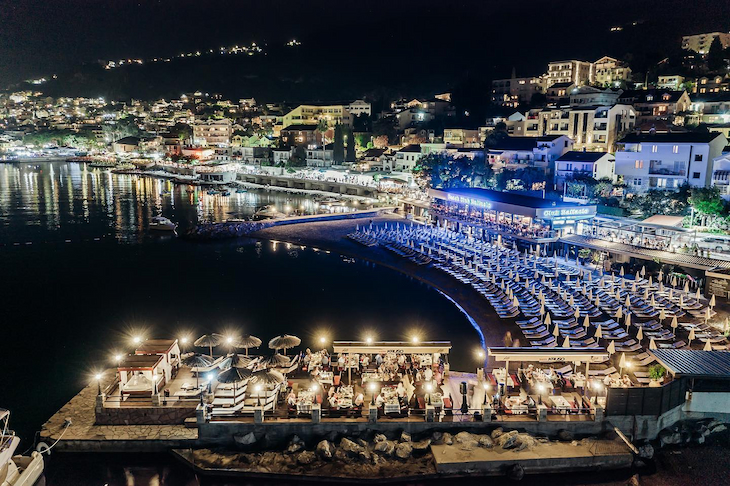
We offer a large number of national and international specialties, as well as a variety of quality wines. With us you can organize business lunches, cocktails, celebrations, weddings, birthdays, we have 150 seats. At the tavern dock you can dock a yacht longer than 20m.
5KONOBA ILIJADA
Along the promenade next to the beach in Igalo, there are restaurants and cafes, among which the most impressive is Konoba Ilijada. This restaurant stands out from the nearby restaurants. Its location is fantastic. Just a few steps from the Iliad begins the Mud Beach, which some call the Old Spa.
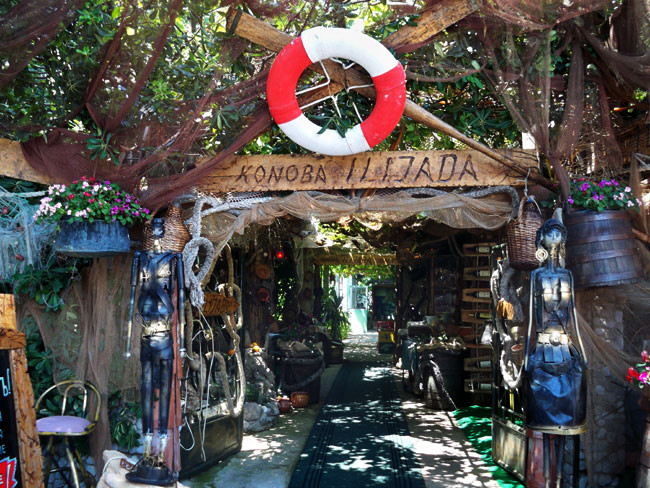
The exterior and interior of the Iliada are dominated by fishing nets and various wooden objects. At the entrance to the restaurant on the left is a sculpture of a Montenegrin, while on the right is a sculpture of a Montenegrin. Both sculptures are made of metal and represent traditionally dressed representatives of the Montenegrin people.
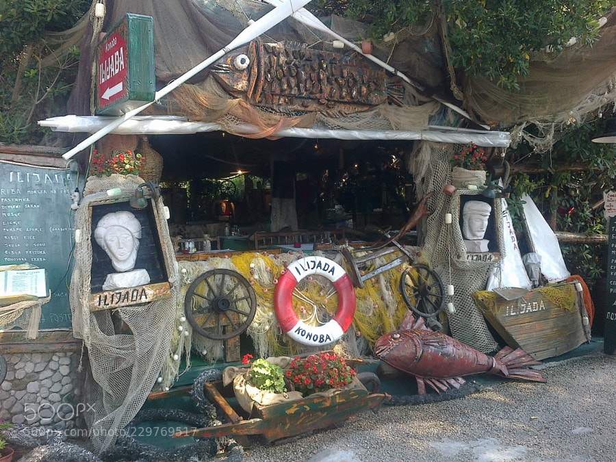
In the Mediterranean ambience of this restaurant, we recommend specialties, such as octopus, squid, crab, shrimp, mussels ... of course there is also fish soup, as well as the inevitable barbecue.
6RESTORAN ADRIATICA
Restaurant Adriatica is located in the picturesque town of Boka Kotorska Bay, in Kamenari. In the shade of olive trees you can enjoy the beautiful dishes of Mediterranean cuisine. Near the ferry in Kamenari, hidden in the shade of olive trees, you will find Adriatic.

The restaurant has a large selection of meat dishes as well as seafood. The view from the terrace of the restaurant is breathtaking, but what really stands out is the great service and delicious food. The concept is developed around seafood, fish and Mediterranean cuisine well mixed with the tradition of Montenegrin cuisine. Open kitchen, tandoori bread in the oven, large barbecue, fish display case, yacht pier, beach bar. The atmosphere is created for guests to relax and enjoy in a large country house by the sea.
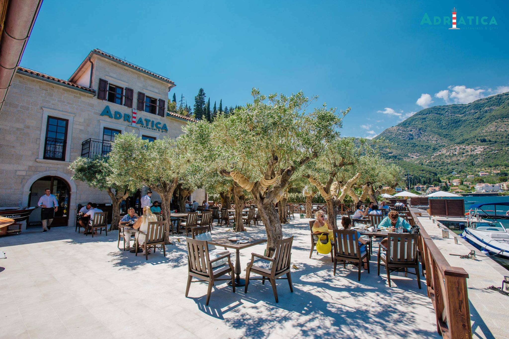
It is not the cheapest place along the coast, but it is worth visiting and spending at least one night.
7PERLA SQUARE PORTONOVI - Restaurant & Bar
Perla Square Portonovi restaurant and cafe bar is located in the heart of the exclusive resort Portonovi - Montenegro Essence. In a unique ambience, surrounded by olive trees and with the pleasant sounds of the fountain that adorns the square where it is located, with a wide range of various dishes and drinks, you will experience unforgettable moments.
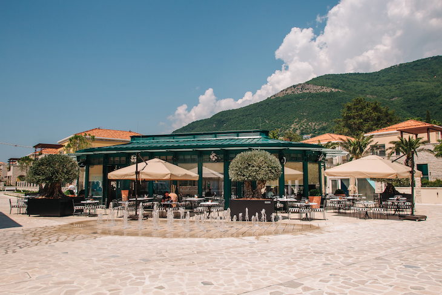
Whether you want to take a coffee break, a meeting with lunch, a romantic dinner or you want to celebrate special days with friends and family, the Perla Square Portonovi restaurant is the perfect choice for you!
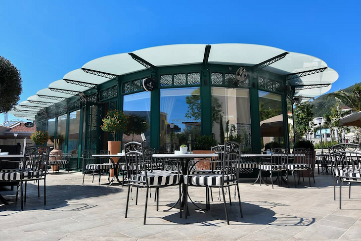
8ŠEKI NAUTILUS
Cafe-pizzeria Šeki Nautilus is located in the center of Igalo, next to the hotel Tamaris, Obala Nikola Kovacevica 26. Seki Nautilus is a place for all generations, a place where you can drink your first morning coffee or indulge in the gastronomic magic created by our chefs.
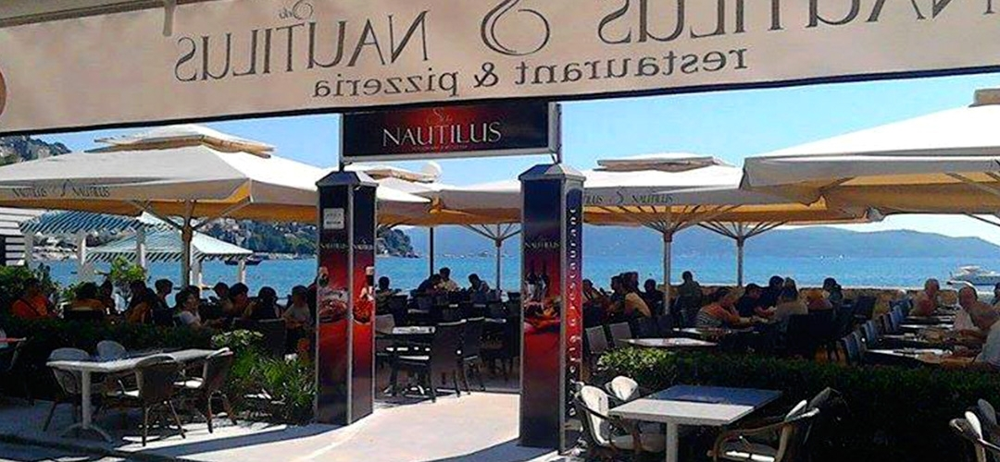
Delicious snacks from the international menu are in line with current culinary trends and will complement your small anniversaries, business successes and intimate moments. The combination of specialties, top wines, renovated interior, as well as beautiful terraces overlooking the entrance to the Bay of Kotor give this restaurant a special look. The friendly staff will make you feel comfortable whether you are a tourist or a regular guest. Cafeteria Seki Nautilus is open all year round and provides home delivery services.